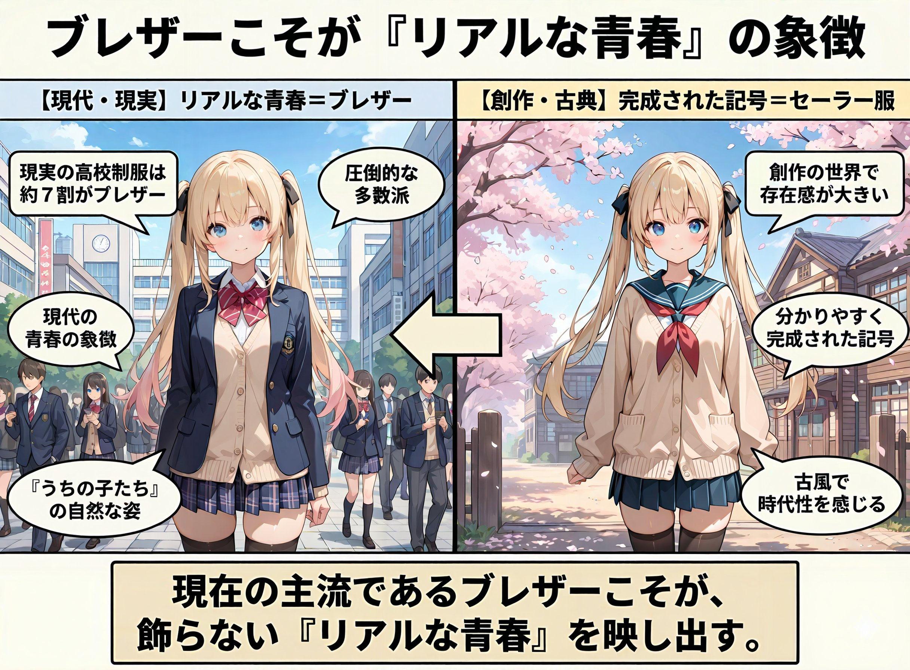
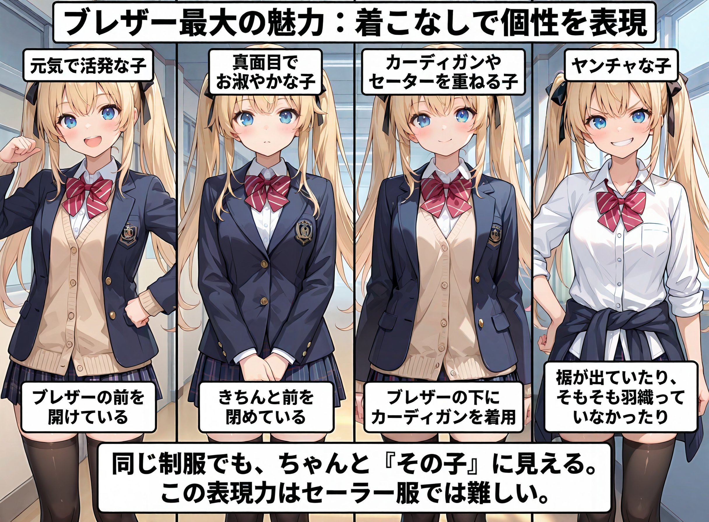
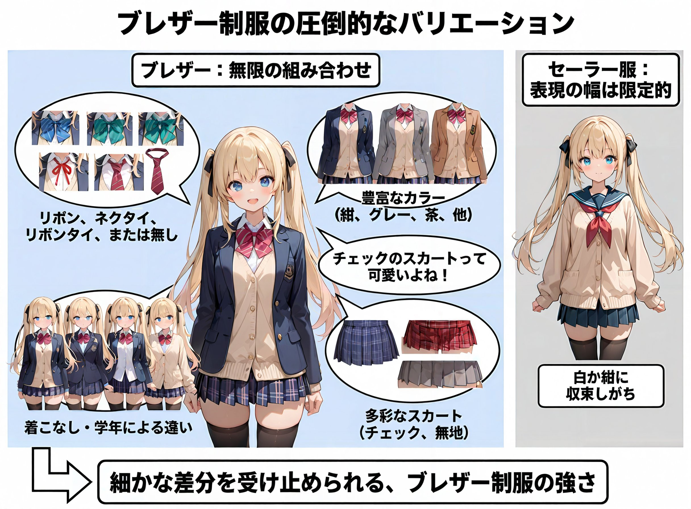
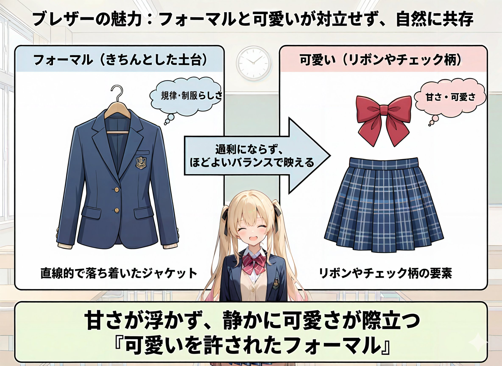

今回は、ブレザーについて少し考察してみようと思う。 なお、私は「ブレザー派／セーラー派」で言えば圧倒的ブレザー派なので、 かなり偏った意見になることをあらかじめご了承いただきたい。

■はじめに
みんなJKは好きだよな？ やっぱりJKといえば制服、制服といえば青春だ。
創作の世界を見ていると、なぜかセーラー服の存在感がやたらと大きい気がする。 実際、創作作品ではセーラー服の割合がかなり高い印象がある。
だが、リアルではどうだろうか。 データによれば、現在の高校制服は約7割がブレザーとも言われている。 つまり、現実世界では圧倒的にブレザーのJKの方が多いのである。
では、なぜ私はブレザーに惹かれるのか。
ブレザーの魅力は、「リアルな青春」にあると思っている。 セーラー服は非常に分かりやすく、完成された記号だ。 それ自体が悪いわけではないが、 裏を返せばどこか古風で、時代性を強く感じる存在でもある。
現在の主流がブレザーである以上、 ブレザーこそが現代の青春の象徴なのではないだろうか。 少なくとも、私が「うちの子たちの学生生活」を思い浮かべたとき、 そこにあるのはセーラー服ではなく、自然とブレザー姿なのだ。

■ブレザーの魅力
そして、ブレザー最大の魅力は 着こなしによってキャラクターの個性が表現できる点だと思う。
元気で活発な子は、ブレザーの前を開けている
真面目でお淑やかな子は、きちんと前を閉めている
カーディガンやセーターを重ねる子
ブレザーの下はワイシャツだけの子
ヤンチャな子は裾が出ていたり、そもそも羽織っていなかったり
同じ制服を着せているはずなのに、 ちゃんと「その子」に見える。 うちの子たちを描いていて、ここが一番面白いと感じる部分だ。
正直、この表現力はセーラー服では難しい。 せいぜいカーディガンを羽織るくらいが限界だろう。

■ブレザーのバリエーション
また、ブレザーは制服そのもののバリエーションも非常に豊富だ。
リボン、ネクタイ、リボンタイ、あるいは何もなし
学年ごとに色の違うリボン
ボタンが2個か3個かで変わる印象
シングルだけでなく、ダブルのブレザーという選択肢
うちの子たちも、学年によってリボンの色を変えているが、 それだけで先輩後輩の空気感や立ち位置が自然に伝わる。 こうした細かな差分を受け止められるのも、ブレザー制服の強さだと思う。
色の面でも、ブレザーは圧倒的だ。
紺やグレー、茶色といった定番色に加え、 創作では白や赤なども見かける。 スカートも無地からチェック柄まで幅広い。
チェックのスカートって可愛いよね。
一方で、セーラー服はどうしても 白か紺に収束しがちで、表現の幅は限られる。

■ブレザーの可愛いポイント
ブレザー制服の魅力は、フォーマルと可愛いが対立せず、同じ画面の中で自然に共存している点にある。 直線的で落ち着いたジャケットという「きちんとした土台」があるからこそ、リボンやチェック柄といった可愛い要素が過剰にならず、ほどよいバランスで映える。 可愛いを前面に押し出すのではなく、規律や制服らしさの中にそっと組み込まれているからこそ、甘さが浮かず、静かに可愛さが際立つ。 それはまさに“可愛いを許されたフォーマル”であり、他の制服にはない、ブレザーならではの魅力なのだ。

■まとめ
まとめると、 ブレザーは 現代的でリアルな青春を感じさせ 着こなしによってキャラの個性を表現でき デザインや色の自由度も高い制服だ。
なんやかんや御託を並べてるけど、結局「なんか好き」なんだよなｗ